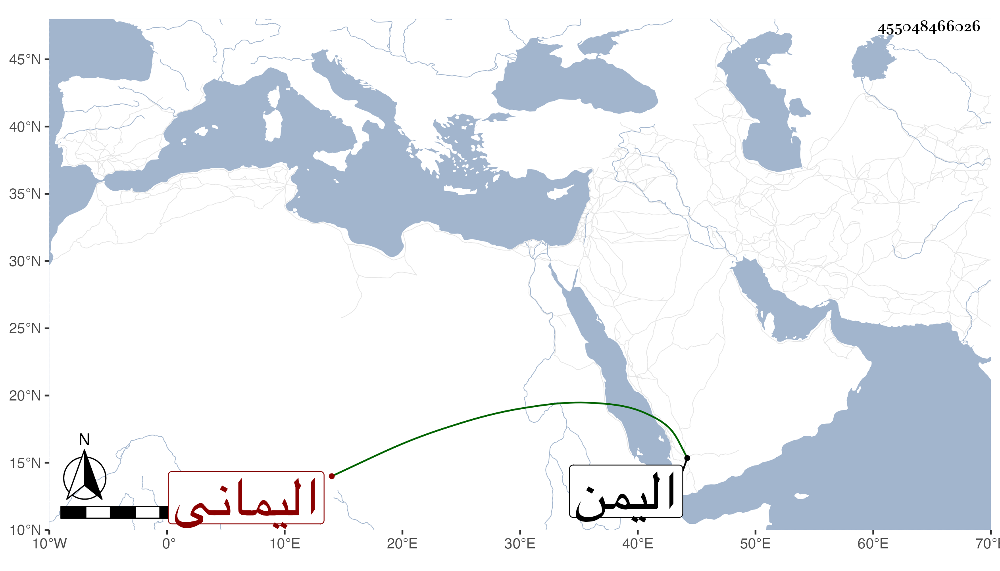

0902Sakhawi.DawLamic.ITO20230111-ara1.EIS1600.455048466026
Biography ID: 455048466026
89
عبد الله بن عبد الرحمن أبو محمد الشنيني اليماني صاحب الأخلاق الرضية والشمائل المرضية ممن لازم مجالس العلماء مدة وحصل كتبا مفيدة مع النسك والتلاوة والعبادة . مات بالطاعون في أواخر سنة سبع وثلاثين ببلده شنين وكان لأبيه رياسة وجاه عند الناصر باليمن .
